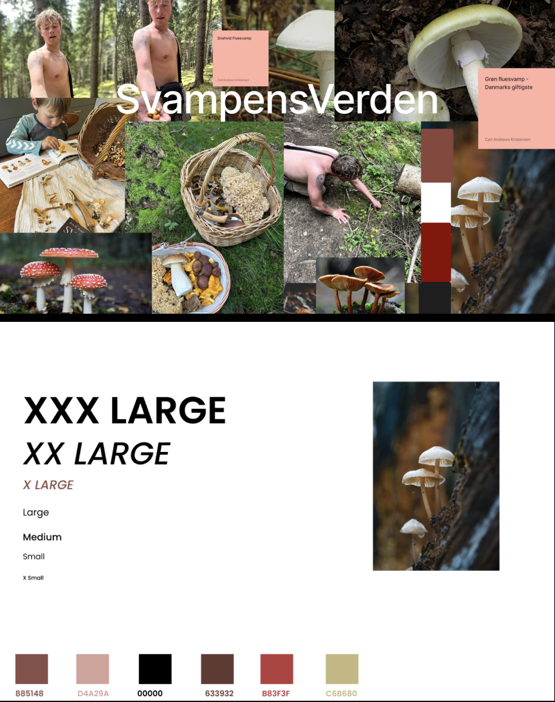
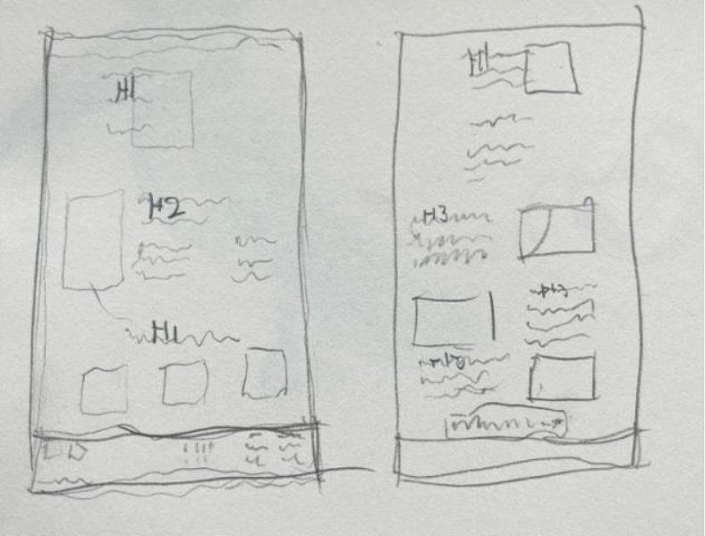
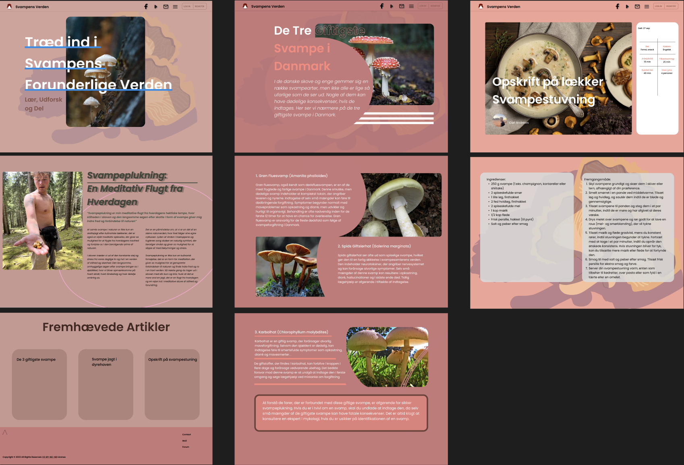
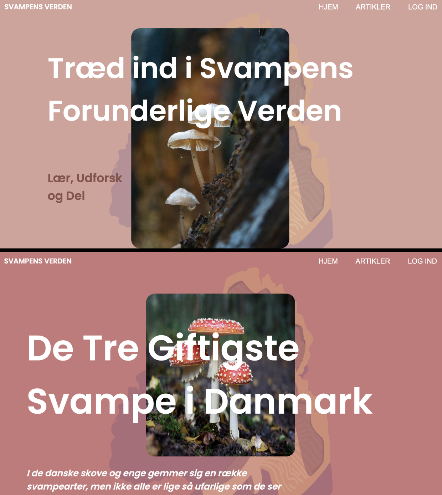

BACK
BASIC WEB
Moodboard and Style Tiles
This theme focuses on UX (user experience) and UI (user interface). We were introduced to moodboards, which are collages of visual elements. In this case, we use moodboards to form a general idea of how a theme should unfold.
We were also introduced to style tiles, which build upon moodboards. These are the selected building blocks we use when constructing our prototype.
Wireframe and Prototype
Unlike the last theme, we had to set up the wireframe ourselves in this project.
Based on my wireframe, I began designing my prototype. I focused on creating a clear and clean design that would be easy to navigate. As the user interface is broad and targets people of all ages, it was crucial to have a user-friendly design. The design itself is inspired by a minimalist website design.
Finished prodcut
An example from two of the pages
